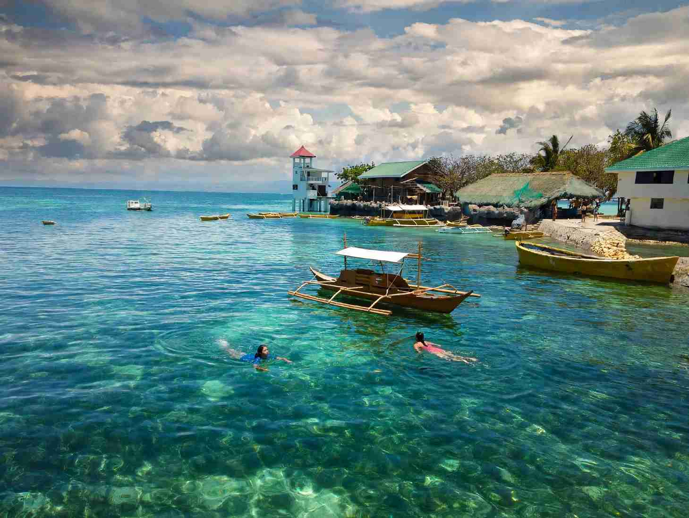

Cordova was the most-visited town in Cebu Province from January to August 2026. The Provincial Tourism Office counted 171,552 arrivals there, well ahead of Santa Fe on Bantayan Island with 120,197 and Daanbantayan, the jumping-off point for Malapascua, with 59,435. Across the whole province, arrivals reached 1,080,809, up 12.78% on the same months of 2025.
The figures come without a breakdown by attraction, but Cordova's location explains a lot. The town sits on the southern edge of Mactan, a short ride from the airport, and since 2022 it has had its own expressway link to Cebu City. That puts island hopping, mangroves, a sandbar and seafood within easy reach of anyone staying in the metro.
This guide covers how to get there, the places most visitors go, what things cost, and how to fit Cordova into a short stay.

Where Cordova Is and How to Get There
Cordova occupies a cluster of islands off the southern coast of Mactan, separated from it by a narrow channel and joined to it by two bridges. It has 13 barangays and a population of 72,915 in the 2024 census. Lapu-Lapu City lies about 18 km away and Cebu City about 28 km.
The fastest road in is the Cebu-Cordova Link Expressway, or CCLEX, a bridge of nearly 9 km that opened in April 2022 and runs from the South Road Properties in Cebu City, home of the SM Seaside Cebu Arena, straight to Cordova. From July 2025, cars and other Class 1 vehicles paid a discounted toll of ₱100, and motorcycles from 110cc to 399cc paid ₱65. Rates are being adjusted in phases, so check the current toll before you go.
Without a car, take a V-hire van from SM City Cebu to Gaisano Grand Mall Cordova for around ₱40 to ₱50, then a tricycle to your stop. A taxi or ride-hailing car from Cebu City costs roughly ₱250 to ₱350, which is good value for a group of three or four.
Island Hopping: Gilutongan and Nalusuan
Two small islands in the Olango group fall under Cordova and are regular stops on island-hopping trips. Gilutongan is a tiny barangay of its own, only about 0.13 square kilometres, with a marine sanctuary on its reef. Nalusuan Island, on the Olango reef, has a marine sanctuary and a small resort with 17 rooms.
Boats leave from resorts and landings along the Mactan and Cordova coast. Prices depend on the boat size, the number of stops and whether lunch is included, so compare a few operators and ask what the sanctuary fees cover. The shallow reefs are the main draw, so follow the guides: no standing on coral, no feeding fish, and no taking shells.
Day-as: Mangroves, Sunsets and Dinner on the Water
Cordova has around 100 hectares of mangrove forest, spread mainly across Pilipog, Bangbang, San Miguel, Day-as and Catarman. The Day-as Boardwalk and Marine Park is the easiest way to see it, with a walkway out over the water.
The same barangay is home to Lantaw Floating Restaurant, a bamboo-built dining spot over the sea that is popular at sunset. Crispy pata, tuna panga and buttered shrimp are among its best-known dishes. Next door, 10,000 Roses Cafe & More fills a seaside lot with rows of glowing artificial roses that light up after dark. Opening hours change from time to time, so check the restaurant's and the cafe's pages before you head out.
Bantayan Bay Sandbar
Not to be confused with Bantayan Island in the north, Bantayan Bay is a sandbar in Sitio Bantayan, Poblacion, with shallow water, mangroves at its edge and native floating cottages. Adults pay an environmental fee of ₱20, ages 9 to 17 pay ₱10 and younger children enter free. A boat transfer to the floating cottages costs ₱30, and a full floating cottage for a group runs about ₱3,500 to ₱5,000 for the day.
The sandbar is best at low tide, so check the tide table and plan your visit around it. Bring sun protection, since the sandbar is open to the sun for most of the day.
A Taste of Bakasi
Cordova is known for bakasi, a small reef eel. Entoy's Bakasihan on Kampay Beach in Barangay Buagsong is a long-running restaurant built around bakasi dishes, with servings around ₱30 and opening hours from 8 am to 7 pm. It is a simple, open-air place, and worth a stop if you want to try something you will rarely see on menus elsewhere in Cebu.
Fitting Cordova Into a Short Trip
Cordova works well as a half-day or full-day outing from Cebu City or Mactan. A practical order is island hopping in the morning, lunch of bakasi or grilled seafood, then the mangrove boardwalk and dinner at Day-as as the sun goes down. If you have only three days in Cebu, our three-day Cebu itinerary shows where a Mactan-side afternoon fits.
Popularity has a cost. Weekends and holidays bring the biggest crowds, especially at the sandbar and the Day-as restaurants, and traffic around Mactan can slow down at rush hour. If you can, go on a weekday. For quieter alternatives elsewhere in the province, see our list of Cebu places beyond the crowds, and if you are travelling late in the year, our guide to peak season in Cebu and Bohol explains when to book ahead.
Why Cordova Deserves Its Spot at the Top
Cordova's lead in the 2026 arrivals has as much to do with access as with anything else, but the town backs it up. In one day you can snorkel a marine sanctuary, walk through mangroves, sit on a sandbar and eat a dish that is hard to find anywhere else. Go early, travel midweek if you can, and treat the reefs and mangroves gently, and it is easy to see why so many visitors make the short trip across.